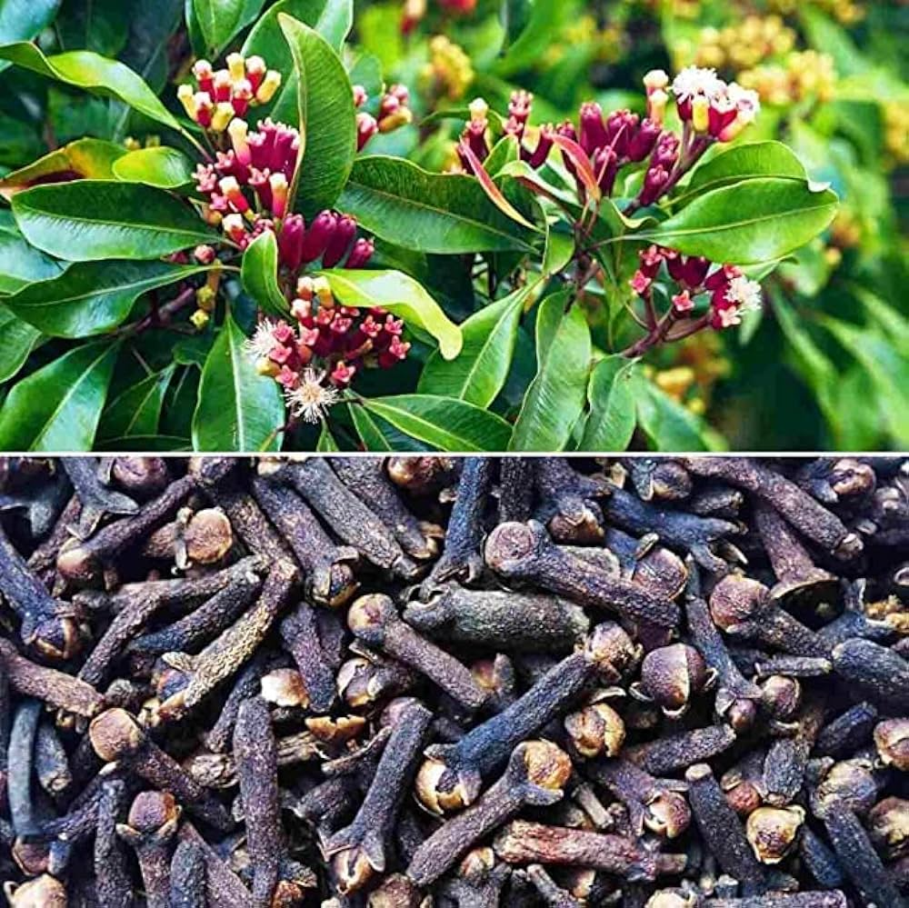

Welcome to the Virtual Herbal Garden
The AYUSH sector relies heavily on medicinal plants and herbs, which form the backbone of traditional healing practices. Our Virtual Herbal Garden allows you to explore these plants from the comfort of your home.
Interactive 3D Models
Tulsi (Ocimum sanctum)
Common Names: Holy Basil, Sacred Basil
Habitat: Native to India, commonly found in gardens.
Medicinal Uses: Known for its anti-inflammatory, anti-viral, and antioxidant properties.
Cultivation: Prefers warm climates and well-drained soil. Grows well in pots or garden beds.

Learn More
Ashwagandha (Withania somnifera)
Common Names: Indian Ginseng, Winter Cherry
Habitat: Native to India, grows well in arid regions.
Medicinal Uses: Adaptogen, helps reduce stress and anxiety, boosts immunity.
Cultivation: Prefers dry, well-drained soil and full sunlight.
 Learn More
Learn More
Turmeric (Curcuma longa)
Common Names: Haldi, Indian Saffron
Habitat: Native to Southeast Asia, requires a warm, humid climate.
Medicinal Uses: Anti-inflammatory, antioxidant, used in digestive health.
Cultivation: Grows in rich, well-drained soil with ample rainfall.
Learn MoreCinnamon (Cinnamomum verum)
Common Names: Ceylon Cinnamon, True Cinnamon
Habitat: Native to Sri Lanka, thrives in tropical climates.
Medicinal Uses: Helps regulate blood sugar levels, has anti-inflammatory properties.
Cultivation: Prefers warm, humid environments with well-drained soil.
 Learn More
Learn More
Cardamom (Elettaria cardamomum)
Common Names: True Cardamom
Habitat: Native to India, grows in tropical and subtropical climates.
Medicinal Uses: Supports digestive health, has antimicrobial properties.
Cultivation: Requires a moist, tropical climate and well-drained soil.
 Learn More
Learn More
Clove (Syzygium aromaticum)
Common Names: Clove Buds
Habitat: Native to Indonesia, thrives in tropical climates.
Medicinal Uses: Used for pain relief, has antibacterial and antioxidant properties.
Cultivation: Prefers warm, humid conditions with rich, well-drained soil.
 Learn MoreSearch & Filter Plants
Virtual Tours
Explore specific themes through guided virtual tours: